Warp Templates leicht gemacht
Das nachfolgende Tutorial stammt von unserem Gastautor Tom Bohaček. Als Webdesigner und Gründer der Berliner Onlineagentur B01 verfügt er über langjährige Erfahrung in der Entwicklung frameworkbasierter Themes und nutzt Warp als Basis für seine eigenen Templates.
Der Inhalt des Tutorials wurde im Juni 2012 verfasst und basiert auf der zu diesem Zeitpunkt aktuellen Warp-Version 6.2. Grundsätzlich werden daher die meisten Beschreibungen ihre Gültigkeit behalten, allerdings können Details in späteren Versionen des Frameworks abweichen.
Vorwort
Schon lange entwickelt kaum jemand mehr Web-Anwendungen auf Basis von reinem PHP-Code. PHP-Anwendungen werden heutzutage mit Hilfe von Frameworks entwickelt. Der Druck, obsolet zu sein, hat schlussendlich auch den letzten Skeptiker hiervon überzeugt. Ich persönlich entwickle Web-Anwendungen seit 2006 auf Basis von Frameworks.
Die Idee, Frameworks für Webdesign zu nutzen, schien lange Zeit absurd. Zu zersplittert waren die Interpretationen der Webstandards verschiedener Browserhersteller, zu individuell die Lösungsansätze bestimmter Designvorstellungen oder Funktionalitäten. Erschwerend kommt die Tatsache hinzu, dass ein CSS-Framework etwas völlig anderes darstellt als ein Entwicklungs-Framework. Hier geht es in erster Linie um Gestaltungsfragen, den Aufbau der Seite mit Hilfe von Layout-Komponenten (meistens Grids), flexiblen Typographien, Unterstützung bei Formularen usw. Jüngst sind Fragen wie Responsive Design, welches das jeweilige Grid-System auf den Kopf stellen kann, hinzugekommen.
CSS-Frameworks sollen also den Webdesigner bei der Erstellung immer komplexer werdender Webseiten unterstützen. Ich werde an dieser Stelle weder pro noch kontra CSS-Frameworks reden. Es gibt unzählige intelligente Artikel im Netz, welche das Für und Wider beleuchten. Im Gegensatz zu den Programmier-Frameworks ist das letzte Wort hier wohl noch nicht gesprochen.
Im Rahmen der Template-Entwicklung für Joomla haben wir bei B01 so ziemlich alle CSS-Frameworks durchgetestet, welche momentan angesagt sind. Leider hat mich keines davon wirklich überzeugt. Dass man sich darauf einlassen und auch gewisse Gewohnheiten ablegen muss, war mir natürlich klar. Auch dass ein CSS-Framework einen bestimmten Ballast mit sich bringt, über den man sich hin und wieder ärgert, hätte ich verkraftet. All das hätte ich in Kauf genommen, wenn die Resultate qualitativ besser und die Produktion effektiver sein würde. Leider hat mich in diesen beiden Punkten kein CSS-Framework überzeugt. Beim Versuch, ein individuelles Design zu realisieren, fand ich mich häufig in der Situation, die Organisation des Frameworks umgehen zu müssen und hässliche Umwege zu gehen. Dabei spreche ich von CSS-Frameworks wie Blueprint, YAML, 960 usw., welche erst einmal nichts mit Joomla zu tun haben und losgelöst davon entstanden sind.
Joomla Template Clubs hingegen haben, wie seinerzeit Anwendungsentwickler, eigene Frameworks entwickelt um bei der Produktion Ihrer Templates möglichst effektiv und zuverlässig gute Qualität zu liefern. Manche setzen nicht eigene, sondern eines der bekannten CSS-Frameworks ein oder lassen sich davon inspirieren. Man muss bedenken, dass bei einem Template eines Clubs wie YOOtheme, Rockettheme oder JoomlArt das CSS nur einen Bruchteil der Arbeit darstellt. Hier geht es auch um eine ganze Menge PHP-Code für die Generierung aller möglichen Menüstrukturen, Modulvarianten, Javascript Widgets, Layout Variationen, Kompressionstechniken usw. Die so entstandenen Template Frameworks der Clubs sind also in erster Linie ein Werkzeug für Template-Entwickler.
Jedes Template-Framework beinhaltet auch entweder ein eigenes oder, wie gesagt, ein bereits bekanntes CSS-Framework. Das Rockettheme Template Framework namens Gantry setzt z.B. das CSS-Framework 960 ein. Inzwischen hat fast jeder Template-Club sein Template-Framework öffentlich verfügbar gemacht. Nachdem wir die wichtigsten davon durchgetestet hatten, entschied ich mich bei der Entwicklung von Joomla Templates tatsächlich für das Warp Framework von YOOtheme. Sie können sich vorstellen, dass dies nach meinen Erfahrungen mit reinen CSS-Frameworks eine ziemliche Wendung war.
Warp bietet als Layout-Komponente zwar auch ein Grid-System, jedoch ist dieses meiner Meinung nach so sensibel und leichtfüßig integriert, dass man es nicht als Ballast oder Hindernis empfindet und auch keine Einschänkungen in Sachen Flexibilität erfährt. Gewinnen tut man hingegen ein unwahrscheinlich mächtiges Fundament, dessen vielfältigen Features kaum Wünsche offen lassen. Zum Zeitpunkt der Entstehung dieses Tutorials ist die Warp Version 6.2 erschienen und beinhaltet neue Möglichkeiten im Bereich des Responsive Designs.
Ich kann sagen, dass wir bei der Erstellung neuer Joomla Templates durch den Einsatz des Warp Frameworks eine deutliche Effizienz- und Qualitätssteigerung erfahren haben. Ich bin überzeugt, dass jeder, der schon einmal ein Joomla Template von der Pike auf entwickelt hat und dieses Tutorial durcharbeitet, dies ebenso erfahren wird.
Voraussetzungen
Um von diesem Tutorial zu profitieren sollten gute bis sehr gute CSS-Kentnisse vorhanden sein. Ist dies nicht der Fall, werden Sie z.B. die Basis CSS-Klassen für Module irritieren und Sie werden beginnen, diese anzupassen, was zu Verwirrung führen kann. PHP- und Javascript-Kentnisse sind nicht zwingend nötig, schaden jedoch auch nicht. In jedem Fall sollten Sie schon ein einfaches Joomla Template zumindest im Ansatz entwickelt haben. Wer bis jetzt nur Artisteer Templates zusammengeklickt hat, steht auf verlorenem Posten und sollte sich zunächst eines der vielen Joomla Template Tutorials zu Gemüte führen, bevor er sich mit einem Template Framework beschäftigt.
Bei der Erstellung der CSS-Dateien wird zwar Sass als CSS-Präprozessor eingesetzt, im Rahmen dieses Tutorials kommt jedoch nur reine CSS-Syntax vor. Das Resultat dieses Tutorials können Sie sich als komplette Joomla Installation in Form eines Akeeba Backup Archivs herunterladen.
Zielsetzung
Das Ziel dieses Tutorials ist nicht ein fertiges Template. Vielmehr sollten Sie am Ende dieses Tutorials verstanden haben, wie die Joomla Template Erstellung mit Hilfe des Warp Frameworks vonstattengeht. Das Template, welches im Rahmen dieses Tutorials entsteht, sollten Sie vollenden können. Besonders bei der Flexibilität und den verschiedenen zur Verfügung stehenden Lösungsansätzen sollte Ihnen während des Tutorials mehrmals ein Licht aufgehen.
Scheuen Sie sich nicht, andere Wege zu gehen. Gerade unterschiedliche Herangehensweisen garantieren trotz Template-Frameworks eine heterogene Template-Landschaft.
Go Go Go!
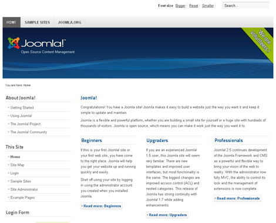
Dieses Tutorial setzt eine jungfräuliche Joomla 2.5.x Installation voraus. Damit wir auch gleich sehen, wie sich das Template im Einsatz verhält, wurde der Standard Demo Content während der Joomla Installation mitinstalliert.
Hier sehen Sie, wie die Joomla Seite frisch nach der Installation aussieht. Eingesetzt wurde ein englischsprachiges Joomla, aber natürlich können Sie auch das deutschsprachige Joomla samt deutschen Demo Content installieren.
Das Template, welches standardmäßig nach einer Installation aktiv ist, ist das Beez2 Default Template. Dieses werden wir erst einmal durch das Warp Master Template ersetzen. Dafür laden wir eben jenes von der YOOtheme Seite herunter:
Das Master Template ist zu finden unter: http://www.yootheme.com/themes/downloads
Das heruntergeladene Template mit dem Namen yoo_master_j25.zip installieren wir über den Extension Manager im Joomla Backend. Nach erfolgreicher Installation aktivieren wir das yoo_master - Default Template über den Template Manager als Standard Template.
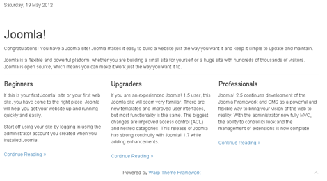
Wenn Sie die Seite nun neu laden, sollten Sie in etwa Folgendes sehen wie auf dem rechten Bild sehen. Ein recht trauriger Anblick, nicht wahr? Nicht einmal ein Navigationsmodul ist zu sehen. Hinter dieser kargen Ansicht verbirgt sich jedoch ein gewaltiges Potential an Möglichkeiten! Genau hier setzt die Arbeit an, um aus dieser seelenlosen Hülle ein Template Ihrer Wahl zu machen. Dazu werden wir uns (fast) aller Möglichkeiten bedienen, welche das Warp Framework bietet und mit wenigen Handgriffen den Ansatz eines vorzeigbaren Templates bauen.
Bevor es ans Eingemachte geht, wollen wir einige Dinge klären. Sie haben bereits vom Master Template und vom Warp Framework gelesen. Aber was bedeutet das genau und wie hängen diese beiden zusammen? Nun, es ist recht einfach. YOOtheme hat im Laufe der Jahre, wie jeder andere Template-Hersteller, ein Basisgerüst für die Erstellung von Templates kreiert. Dieses Basisgerüst wird auch Framework genannt und im Falle von YOOtheme nennt sich das Framework Warp. Das nackte Framework residiert im Verzeichnis /warp des von Ihnen heruntergeladenen Master Templates.
Das Master Template ist sozusagen ein rudimentäres Template auf Basis des Frameworks. Wie Sie oben sehen konnten, kann man mit dem nackten Master Template nicht wirklich glücklich werden. Das Master Template bildet mehr eine Grundlage, von der aus Sie Ihr eigenes Template erstellen bzw. abwandeln können.
Das Wort "abwandeln" spielt dabei eine große Rolle. Dank des Warp Frameworks müssen wir uns keine grundlegenden Gedanken über Dinge wie Browserkompatibilität, Flexibilität oder das Raster machen. All das vererben tieferliegende Warp CSS Dateien an unser Template, so dass wir uns ganz auf die schönen Dinge des Webdesigns konzentrieren können.
Warp Overrides
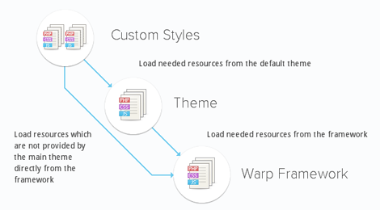
Wie und weshalb wir gleich Anpassungen durchführen werden, können Sie nur verstehen, wenn Sie den Override Ansatz des Warp Frameworks nachvollziehen können. Was Overrides sind, sollten Sie als Joomla Template Entwickler eigentlich wissen. Falls nicht, verweise ich gerne auf mein, inzwischen zwar etwas veraltetes, aber immer noch gültiges Tutorial zu Content Overrides.
Wie funktioniert das also mit den Overrides beim Warp Framework? Sehen wir uns dazu die Grafik zur Rechten an.
1. Die Warp Framework Ebene stellt als tiefste Ebene alle grundlegenden Ressourcen
(CSS, JS, usw.) bereit. Diese Ressourcen kümmern sich um all die unangenehmen Dinge wie Browserkompatibilität, flexible Menüs und Module, das Raster und viele andere Dinge, welche Sie nie oder selten anpassen müssen.
2. Die Theme-Ebene steht für das aktuelle Template. YOOtheme benutzt das Wort Theme anstatt Template. In unserem Fall ist das aktuelle Template das Master Template. Diese Ebene beinhaltet Ressourcen, welche speziell das Template betreffen.
3. Meiner Meinung nach die spannendste Ebene ist die Styles Ebene. Diese baut auf der Theme Ebene auf und ermöglicht Variationen (Styles) des aktuellen Templates/Themes. Diese Styles können so tiefgreifend sein, dass sie nicht nur das gesamte Erscheinungsbild verändern, sondern auch funktionelle Variationen ermöglichen.
Als Beispiel für Warp Styles führe ich gerne unser PRIME Joomla Template an, welches folgende drei Variationen (Styles) hat:
Mellow,
Monolith,
Quad
Sie sehen, dass sich das gesamte Layout der Styles verändert. Zusätzlich können auf der Styles-Ebene auch Variationen in Sachen Farben, Schriften usw. durchgeführt werden.
Wie stellen sich also die erst einmal etwas abstrakt wirkenden Warp Ebenen in Realität dar? Sehen wir uns dazu die Verzeichnisstruktur des Master Templates an:
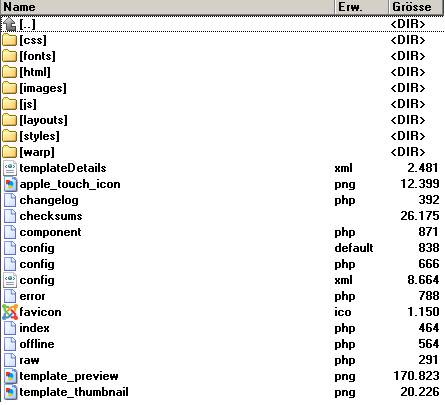
Es ist wichtig zu verstehen, was hinter dieser Struktur steckt. Gehen wir es Stück für Stück an. Die für uns wichtigen Verzeichnisse sind fett gedruckt:
- /css: Hier liegen CSS-Dateien der Themes-Ebene.
- /fonts: Hier liegen Schriften der Themes-Ebene.
- /html: Hier liegen Content Overrides der Themes-Ebene (nun, das stimmt nicht ganz, aber belassen wir es erst einmal dabei).
- /images: Hier liegen Bilddaten der Themes-Ebene.
- /js: Hier liegen Javascript-Dateien der Themes-Ebene. In der Regel liegt hier nur eine Datei. Ignorieren Sie das Verzeichnis am besten.
- /layouts: Eines der wichtigsten Verzeichnisse. Hier liegen PHP-Dateien der Themes Ebene. Unter anderem liegt hier die index.php Ihres Templates (nur dass sie template.php heisst).
- /styles: Wie der Name schon sagt, liegen hier die Styles Ihres Templates, also die dritte Ebene. Innerhalb des Styles-Verzeichnisses können weitere Verzeichnisse liegen, die Variationen Ihres Themes ermöglichen und den einzelnen Styles entsprechen.
- /warp: Hier liegt das Warp Framework. Sie sollten sich davon inspirieren lassen, aber verändern Sie nie Dateien in diesem Verzeichnis.
Innerhalb dieser Verzeichnisstruktur wird vererbt und "overridden", was das Zeug hält. Natürlich haben Sie jetzt noch keinen Schimmer, wie genau das vonstattengeht, aber das werden Sie bald anhand praktischer Beispiele sehen.
Es gibt nun zwei Wege, wie wir an die Erstellung eines eigenen Templates herangehen können. Ein Weg wäre, das aktuelle Theme (Master Template) abzuändern. Das heißt, wir würden z.B. die CSS Dateien im Verzeichnis /css einfach nach unseren Wünschen anpassen. Dieser Weg bedeutet eine Anpassung auf der zweiten Ebene, der Theme-Ebene.
Ich lasse lieber alles unangetastet und erstelle ein Template auf der dritten Ebene, der Styles-Ebene. Nun, das ist nicht ganz korrekt formuliert. Eigentlich erstellen wir "nur" einen Style, aber da Styles sehr mächtig sein können, nutzen wir sie um ein eigenes Template damit zu bauen. So werden wir nicht von bereits vorhandenen HTML Strukturen oder CSS-Selektoren abgelenkt. Zusätzlich ist dieser Weg lernintensiver, da Sie gleich alle drei Ebenen richtig kennenlernen. Wenn Sie sicher im Warp Sattel sitzen, können Sie ein Template auch direkt auf der zweiten Ebene erstellen. Die Schritte, welche ich beschreibe, können leicht dahingehend übertragen werden.
Ein neuer Style "nice"
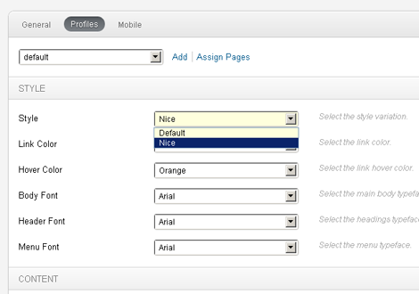
Ich gehe davon aus, dass Sie beim Webdesign Tools wie Firebug oder die Entwicklertools vom Chrome einsetzen. OK, womit fangen wir an? Am besten mit etwas völlig Einfachem - ändern wir die Hintergrundfarbe! Dafür verpassen wir dem BODY-Element eine entsprechende CSS-Anweisung. Aber wo machen wir das jetzt genau?
Da wir einen eigenen Style erstellen wollen, müssen wir dies dem Warp Framework mitteilen. Dafür erstellen wir im /styles Verzeichnis ein Ordner namens /nice. Hier wird sich unser Style Stück für Stück entwickeln. Sobald der Ordner angelegt ist, sollten Sie in das Joomla Backend gehen und dort in den Template Manager. Hier klicken Sie auf das yoo_master - Default Template um es zu konfigurieren.
Wie Sie sehen, gibt es hier eine ganze Menge an Einstellungen. Was uns momentan interessiert, ist der Tab Profiles. Dort wechseln wir den Style von Default auf Nice und speichern das Ganze ab.
Zurück im Frontend bemerken wir beim Neuladen der Seite...nichts. Warum auch, wir haben ja nur einen Ordner angelegt. Wenn wir wollen, dass unser Style irgendwie greift, müssen wir auch etwas CSS dort platzieren.
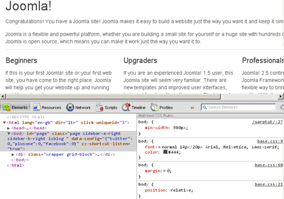
Um herauszufinden welche CSS-Datei wir anpassen müssen, nutzen wir die Entwicklertools. Wenn wir das BODY-Element markieren, sehen wir rechts, in welchen CSS-Dateien es definiert wurde. Da wäre einmal die base.css: Zeile 9, welche auf die /css/base.css Datei verweist. Dann sind noch die base.css: Zeile 60 und base.css: Zeile 21 zu sehen, welche beide auf die /warp/css/base.css Datei verweisen.
Da wir die Warp Dateien (1. Ebene) nur ansehen, aber nicht anfassen, bleibt nur die base.css aus dem /css Ordner. Wie ich oben beschrieben habe, ist dies ein Ordner, welcher sich auf die zweite Ebene, das Theme, bezieht. Wir wollen jedoch nicht direkt auf der zweiten Ebene Anpassungen vornehmen, sondern auf der dritten, der Styles Ebene. Hierfür kopieren wir die /css/base.css Datei in einen CSS-Ordner unseres Style Ordners. Das sieht dann so aus: styles/nice/css/base.css.
Wenn Sie die Seite nun neu laden, bemerken Sie, dass etwas nicht stimmt. Die H1 überschrift "Joomla" ist plötzlich zu klein und auch sonst ist etwas anders. Was ist geschehen? Sehen Sie sich die base.css aus Ihrem /nice/css Ordner an. Dort finden Sie ganz oben die Zeile:
@import url(../warp/css/base.css);
Diese kümmert sich darum, dass die base.css aus der ersten Ebene, also dem Warp Framework geladen wird. Das hat funktioniert, solange dieser Aufruf aus der zweiten Ebene kam, also dem /css Verzeichnis. Jetzt ist es jedoch ein Style geworden und deswegen müssen wir die Zeile wie folgt anpassen:
@import url(../../../warp/css/base.css);
So wird die base.css auf dem Warp Framework wieder korrekt geladen. Wenn wir schon dabei sind, erweitern wir das BODY- Element um eine Hintergrundfarbe:
body {
font: normal 14px/20px Arial, Helvetica, sans-serif;
color: #444;
background-color: #F2F0DF; /* neue Hintergrundfarbe */
}
Wenn Sie nun die Seite neu laden, sehen Sie eine neue Hintergrundfarbe. Glückwunsch! Sie haben gerade Ihr erstes Warp Override erstellt.
Noch einmal zusammengefasst:
Wir haben die base.css, in welcher das BODY-Element beschrieben wird aus der zweiten Ebene (/css) in die dritte Ebene (/css/nice/css) kopiert und angepasst. Dadurch haben wir ein Override für die Datei base.css erstellt. Das Warp Framework nutzt nun nicht mehr die base.css der zweiten Ebene, sondern die der dritten (und natürlich der ersten). Wenn Sie das verstanden haben, will ich noch zwei alternative Wege für diese Anpassung beschreiben.
Die base.css Datei, welche wir kopiert haben, beinhaltet noch einige andere CSS-Anweisungen. Möglicherweise wollen wir diese gar nicht anpassen. Wir könnten die Datei also wie folgt anpassen:
@import url(../../../warp/css/base.css);
@import url(../../../css/base.css);
body {
font: normal 14px/20px Arial, Helvetica, sans-serif;
color: #444;
background-color:#F2F0DF;
}
Dadurch enthält die Datei nur das BODY-Element, welches wir anpassen wollen. Den Rest haben wir entfernt. Durch das Einfügen der Zeile @import url(../../../css/base.css); wird nun, anders als zuvor, zusätzlich die base.css der Theme Ebene geladen. Also nochmal: Zunächst wird die base.css der ersten Ebene geladen (Warp Framework), dann der zweiten Ebene (Theme) und dann der Style Ebene.
Wenn Sie diesen Vererbungsmechanismus verstanden haben, können Sie sehr leicht CSS-Anpassungen vornehmen, ohne das eigenliche Template (Ebene 2) oder Warp (Ebene 1) zu verändern. Einfach die jeweiligen CSS-Dateien aus dem /css Ordner in Ihren Styles Ordner kopieren. Wie Sie sehen können, liegen dort einige Dateien, welche sich um ganz bestimmte Fragen kümmern. Die modules.css um Module, die menus.css um das Menü, die system.css um Ausgaben des CMS usw. Sie sollten unbedingt lernen, die verschiedenen CSS Dateien nur für die Zwecke zu nutzen, für welche sie gedacht sind. Dadurch bleibt alles organisiert und Sie wissen immer, wo Sie bestimmte Anweisungen finden, wenn Sie diese anpassen wollen.
Modulpositionen
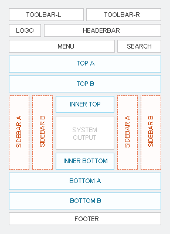
Machen wir weiter. Unser "Template" hat nun eine Hintergrundfarbe bekommen, ansonsten ist nicht viel passiert. Platzieren wir erst einmal ein paar Module so, dass die ganze Sache auch ein wenig Fleisch an die Knochen bekommt. Verschaffen wir uns einen überblick zu den möglichen Modulpositionen, welche das Master Template bietet.
Wie Sie sehen, gibt es reichlich Möglichkeiten, Module zu platzieren. Natürlich können Sie bei entsprechenden Anpassungen beliebig eigene Modulpositionen einföhren. Mit Hilfe der Warp eigenen Modul Layout Features lassen sich die blauen Positionen noch weiter flexibilisieren. Dazu kommen wir jedoch später.
Wir kennen nun also die möglichen Modulpositionen. Wenn Sie, so wie ich, ein frisches Joomla nutzen, dann werden auch die Beez Templates mit so vielsagenden Modulpositionen wie position-7 mitinstalliert. Damit wir in Sachen vorhandener Modulpositionen nicht zu sehr suchen müssen, empfiehlt es sich, alle Beez Templates, das Atomic Template und das Backend Hathor Template im Extensions Manager zu deinstallieren.
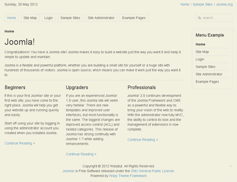
Ist das erledigt, springen wir im Backend in den Module Manager und platzieren ein paar wichtige Module. Achten Sie darauf, dass die Module auf allen Seiten sichtbar und öffentlich sind, falls das nicht bereits der Fall ist.
- Das Hauptmenü/Main Menu auf Position menu
- Das Top Menu auf Position toolbar-r
- Das Beispiel Menü/Menu Example auf Position sidebar-b
- Das Footer Modul auf Position footer
- Das Smart Search Module auf Position search
- Das Breadcrumbs Modul auf Position breadcrumbs
So, das waren erst einmal die Wichtigsten. Wenn Sie alles richtig gemacht haben, sollte Ihre Seite nun wie zur Rechten aussehen.
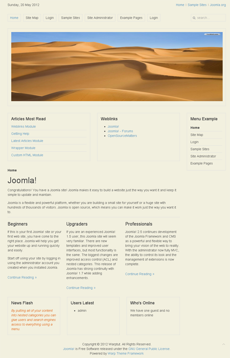
Schon besser. Damit es noch etwas lebendiger wird, erstellen bzw. platzieren wir noch folgende Module:
- Ein Custom HTML Modul mit einem hübschen Bild auf Position top-a
- Das Who's Online Modul auf Position innerbottom
- Das Users Latest Modul auf Position innerbottom
- Das News Flash Modul auf Position innerbottom
- Das Login Modul auf Position menu
- Das Articles Most Read Modul auf Position innertop
- Das Weblinks Modul auf Position innertop
Die Seite sollte nun wie zur Rechten aussehen.
Zugegeben, die Module haben so angeordnet kaum Sinn, aber wir wollen ja auch keine Webseite erstellen, sondern genug Material haben um am Template zu arbeiten.
Template Konfiguration
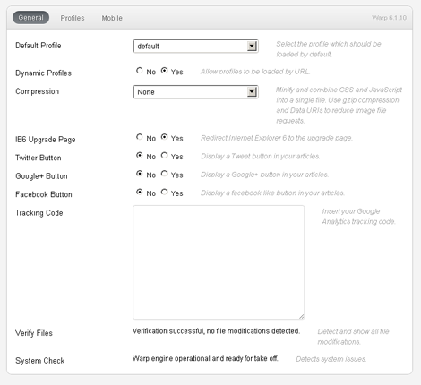
Jetzt, wo wir so etwas wie eine Webseite haben, wollen wir uns die vorhandenen Template Parameter ansehen. Mit Hilfe der Template Parameter können das Aussehen und gewisse Funktionalitäten des Templates über das Backend konfiguriert werden. Wechseln wir also in den Template Manager und klicken dort auf das Master Template.
Nun sehen wir die selben Einstellungen wie im rechten Bild.
Die Einstellungen von Warp basierten Templates unterteilen sich in die drei Bereiche:
General, Profiles und Mobile. Der Mobile Bereich ist ab Warp Framework Version 6.2 weggefallen, sodass die neuen, responsiven Fähigkeiten die Möglichkeit bieten, sämtliche Endgeräte zu unterstützen. Wir hätten uns damit sowieso nicht beschäftigt. Im General Bereich werden Einstellungen getroffen, welche das Template unabhängig vom aktiven Profile betreffen. Die wichtigste ist wohl die Wahl des standard Profils. Was Profiles sind, erkläre ich Ihnen gleich. Lassen Sie diese Einstellung auf Default.
Falls Sie sich erinnern, waren wir bereits im Profiles-Bereich, klicken Sie ihn also an.
Im Profiles Bereich werden Einstellungen getroffen, welche nur das aktuelle Profile betreffen. Hier hatten wir unter dem Punkt Styles bereits unser neu angelegtes Style Nice ausgewählt. Was sind also Profiles? Unter dem Begriff können Sie sich eine individuelle Auswahl der angebotenen Einstellungen vorstellen. In der Regel hat ein selbst erstelltes Template nur das Default Profile. Wollen Sie jedoch ein Template erstellen, welches Ihren Kunden bzw. Nutzern etwas mehr Freiheit gibt, so können Sie mehrere Styles erstellen, welche hier verschiedenen Profilen zugewiesen werden können.
Stellen Sie sich vor, Ihre Webseite hat einen Menüpunkt, der auf eine Seite führt, die eine große Google Maps Karte enthält. Anders als auf dem Rest der Seite sollen beide Modulpositionen sidebar-a und sidebar-b rechts angeordnet sein. Zusätzlich sollen diese Module mehr Platz erhalten. All das können Sie mit einem hierfür erstelltem Profil ermöglichen.
Sie erstellen also über den Link Add ein Profil namens Map, konfigurieren es den Anforderungen entsprechend und speichern es. Unter Assign pages können Sie nun dieses Profil dem Menüpunkt Ihrer Wahl zuweisen. Schon haben Sie eine Seite, welche anders strukturiert ist als der Rest Ihrer Webseite.
Falls Sie schon einmal ein Template von YOOtheme eingesetzt haben, werden Sie die Möglichkeiten dieses Ansatzes bereits kennen, da die YOOtheme Templates eine ganze Palette an Styles, Farben und Hintergrundgrafiken anbieten, welche verschiedenen Profilen zugeordnet werden können.
Im späteren Verlauf des Tutorials werde ich beschreiben, wie Sie eigene Template Parameter definieren können. Schauen wir uns mal an, was man mit den so genannten Modul Layouts anstellen kann. Ich gehe davon aus, dass Sie im Profiles Bereich sind und das Default Profile mit dem Nice Style ausgewählt ist.
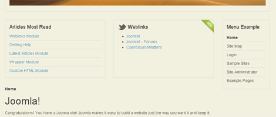
Im Layout-Bereich der Einstellungen finden Sie Parameter wie Top A Layout, Top B Layout, Inner Top Layout usw. Diese kann man auf Double, Equal oder Stack einstellen. Probieren wir es direkt aus. Stellen Sie den Parameter Inner Top Layout auf Double und speichern.
Zuvor sah dieser Modulbereich wie zur Rechten aus.
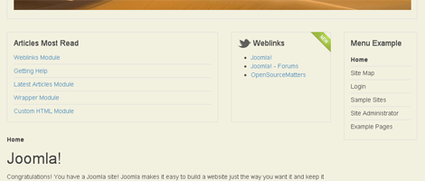
Nun ist Folgendes passiert:
Double bedeutet also, dass die Breite des ersten Moduls in der Position verdoppelt wird. Praktisch, oder? Was aber, wenn Sie lieber das Weblinks Modul mit doppelter Breite hätten anstatt dem Articles Most Read Modul? Ganz einfach - Sie ändern in der Joomla Modulverwaltung einfach die Reihenfolge der beiden Module. Darauf sind Sie sicher selbst gekommen.
Also gleich einmal das Stack-Modullayout ausprobieren.
Die Module werden übereinander gestapelt, auch nicht schlecht. Das Modul Layout Feature zählt für mich zu einem der Beispiele für den wunderbaren Pragmatismus des Warp Frameworks. Etliche Frameworks bieten dem Template Hersteller unzählige Möglichkeiten Module zu formatieren und zu positionieren. Dabei werden nicht selten über 60 Modulpositionen angeboten. Mit dem Modul Layout Feature ist dies überflüssig. Jeder kann über diese Einstellungen das Layout erreichen, welches er sucht. Für diejenigen, welche in Sachen Modulpositionierung und Formatierung mehr wollen, bietet das Framework vollkommen individuelle Anpassungsmöglichkeiten, zu denen wir noch kommen.
Ich merke schon wie Sie sich fragen, wie zum Teufel diese kleinen Grafiken im Weblinks Modul zustande kommen - das kleine Twitter Icon neben dem Titel und das New Icon oben rechts. Dazu, und damit zu einem völlig neuem Thema, kommen wir jetzt.
Modul Styles
Das Warp Framework nutzt Modul Klassen Suffixe für die individuelle Formatierung von Modulen. Welche Suffixe angeboten werden, können Entwickler in der /layouts/modules.php herausfinden.
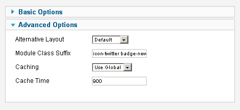
Grundsätzlich muss man sich den Ansatz wie eine Definition von Variablen vorstellen. Das erste Wort ist der Variablenname und das zweite der Wert. Wenn wir also das Twitter Icon haben wollen, definieren wir icon-twitter als Klassen Suffix. Für das New Icon (auch badge genannt) reicht ein badge-new. Die Modul Suffixe definieren Sie in den Erweiterten Optionen des jeweiligen Moduls. Im Bild zur Rechten als Beispiel im Weblinks Modul zu sehen.
Bevor wir einen eigenen Parameter einführen, muss ich zunächst etwas ausholen.
Das Positionieren und Formatieren der Module wird zum großen Teil in der oben erwähnten /layouts/modules.php Datei definiert. Das Wunderbare ist, dass wir diese Datei per Override abwandeln können. Kopieren Sie also diese Datei in Ihren /styles/nice/layouts/ Ordner. Nun wird bei Nutzung des nice Styles nicht mehr die modules.php der zweiten Ebene genutzt, sondern die der dritten, nämlich unseres Styles. Diese Override Techniken sind ein sehr wichtiger Aspekt bei der Arbeit mit dem Warp Framework und Sie sollten die Mechanismen dahinter verstehen, um das Maximum der gegebenen Möglichkeiten zu nutzen.
Für alle, die sich mit PHP auskennen, wird der Inhalt der modules.php ausreichen, um die Funktionsweisen dahinter zu verstehen. Für alle anderen will ich anhand zwei kleiner Beispiele eine Einführung geben.
In der modules.php sehen Sie folgende Zeilen:
foreach (array('suffix', 'style', 'color', 'badge', 'icon', 'dropdownwidth') as $var) {
$$var = isset($params[$var]) ? $params[$var] : null;
}
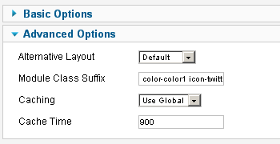
Hier sehen Sie welche Suffixe in dieser Datei behandelt werden. Unter anderem sehen wir das Suffix color. Erweitern wir also das Klassensuffix unseres Moduls um color-color1.
Sah der Quelltext unseres Moduls zuvor wie folgt aus:
<div class="grid-box width50 grid-h" style="width: 390px; ">
<div class="module mod-box deepest" style="min-height: 177px; ">
<div class="badge badge-new"></div>
<h3 class="module-title"><span class="icon icon-twitter"></span>Weblinks</h3>
<ul class="weblinks icon-twitter badge-new">
...
</ul>
</div>
</div>
so ist nun dies daraus geworden:
<div class="grid-box width50 grid-h" style="width: 390px; ">
<div class="module mod-box mod-box-color1 deepest" style="min-height: 177px; ">
<div class="badge badge-new"></div>
<h3 class="module-title"><span class="icon icon-twitter"></span>Weblinks</h3>
<ul class="weblinks color-color1 weblinksicon-twitter badge-new">
...
</ul>
</div>
</div>
Der Modulrenderer des Warp Frameworks bindet die neue Variable so in das ausgebende HTML, dass es von einem Webdesigner sinnvoll eingesetzt werden kann. Dann setzen wir es einmal sinnvoll ein.
Kopieren Sie die modules.css aus dem /css Ordner in den /styles/nice/css/ Ordner. Schon wieder haben wir ein Override erstellt! Vergessen Sie allerdings nicht die relativen Pfade innerhalb dieser CSS-Datei anzupassen. Da wären:
1. @import url(../../../warp/css/modules.css);
2. background: url(../../../images/module_badges.png) 0 0 no-repeat;
3. background: url(../../../images/module_icons.png) 0 0 no-repeat;
Jetzt sollte alles wie zuvor ausschauen. Ob Sie es glauben oder nicht, aber das ist manchmal schon ein Erfolg.
Erweitern wir die eben kopierte modules.css (in unserem nice Style!) um folgende Zeilen:
/* Module Colors
----------------------------------------------------------------------------------------------------*/
.mod-box-color1 {background-color: #CF8B3F;}
.mod-box-color2 {background-color: #6B9EDF;}
Nun können Sie über das Modulsuffix jedes Moduls, welches als Box-Template gerendert wird, eine individuelle Hintergrundfarbe bestimmen. Damit nicht blaue Schrift auf blauem Hintergrund steht, sollte man natürlich noch CSS-Anweisungen für den Inhalt dieser Module definieren. Aber da dies trivial ist, überlasse ich das Ihnen. Was es mit dem Box-Template eines Moduls auf sich hat, wird gleich beschrieben.
Ein eigenes Modul Template
So, das war recht einfach. Werden wir etwas anspruchsvoller. Stellen Sie sich vor, wir wollen ein absolut positioniertes Modul im Content-Bereich unserer Webseite haben, welches uns die meist gelesenen Artikel darstellt. Im Prinzip also das Most Read Modul, nur absolut positioniert. Da dieses Modul viel Platz benötigt, werden wir mit etwas CSS und Javascript dafür sorgen, dass es nicht permanent den aktuellen Content überlagert. Technisch ist das trivial, aber für uns ist es interessant zu sehen, wie das unter Warp zu realisieren ist.
Wenn wir uns die vorhandenen Modulpositionen ansehen, stellen wir schnell fest, dass es hier nichts passendes für uns gibt. Man könnte zwar die innertop Position benutzen, aber das wäre nicht nett. Wir müssen also eine neue Modulposition einfügen. Kopieren Sie hierfür aus dem /layouts Ordner die template.php nach /styles/nice/layouts/. Schon wieder haben wir ein Override erstellt und diesmal sogar eines, welches den Aufbau des gesamten Templates bestimmt.
Noch einmal zur Erinnerung: die template.php ist das, was die index.php eines "normalen" Joomla Templates ist.
Hier können wir um die Zeile 100 herum aus folgendem Code:
<?php if ($this['config']->get('system_output')) : ?>
<section id="content" class="grid-block"><?php echo $this['template']->render('content'); ?></section>
<?php endif; ?>
dieses hier machen:
<?php if ($this['config']->get('system_output')) : ?>
<section id="content" class="grid-block">
<?php if ($this['modules']->count('contentabs')) : ?>
<div id="contentabs"><?php echo $this['modules']->render('contentabs'); ?></div>
<?php endif; ?>
<?php echo $this['template']->render('content'); ?>
</section>
<?php endif; ?>
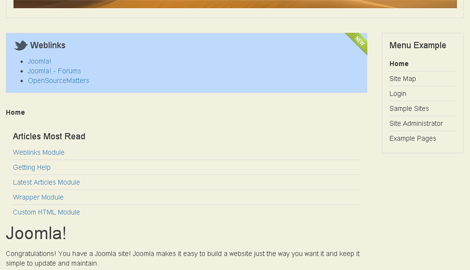
Wir haben also eine neue Modulposition namens contentabs (was für content absolute stehen soll) direkt in den Content-Bereich der Seite eingefügt. Lassen Sie uns das gleich testen! ändern Sie die Position des Articles Most Read Moduls von innertop auf contentabs. Nun sieht die Seite wie im Bild zur Rechten aus.
Grauenhaft, aber richtig! Auch wenn es nicht so aussieht, liegt das Modul an der richtigen Stelle. Was jetzt fehlt, ist etwas CSS um der Sache Sinn zu geben.
In der modules.css fügen wir Folgendes ein:
#contentabs {
position: absolute;
right: 0;
background-color: #FCFBF2;
}
In der layout.css, für die Sie auch gleich ein Override erstellen (doch, Sie können das!) fügen wir Folgendes ein:
#content { position:relative; }
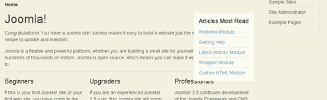
Das Ganze sieht nun so aus:
Wir könnten die neue Modulposition nun noch in die templateDetails.xml integrieren.
Fügen Sie folgenden Code in die templateDetails.xml ein:
<position>contentabs</position>
Dadurch weiß auch das CMS bescheid, dass es diese Modulposition gibt und bietet sie, wenn nötig, an.
Nun möchte ich Ihnen zeigen, wie einfach es ist, ein wenig Funktionalität in ein Warp Template einzubauen. Das Modul sieht so ja ganz nett aus, besser wäre es aber, wenn wir es ein- und ausklappen könnten, damit nicht der halbe Inhalt davon verdeckt wird.
Ich beschränke mich dabei auf minimale Anforderungen, denn es geht hauptsächlich darum, zu verstehen, wo und nicht wie man die Anpassungen durchführt.
Bevor Sie weiterlesen, sollte ich noch erwähnen, dass Sie natürlich beliebige andere Modulpositionen erzeugen können. Ich empfehle die Warp Dokumentation zu neuen Modulpositionen hier: Create a new module position
Also, um das Einklappen (Toggle) einzubauen, brauchen wir etwas Javascript (JS). Für etwas Javascript, welches sich um Funktionen des Templates kümmert, eignet sich am besten das template.js, welches im /js Order liegt. Wir wollen es aber nicht direkt dort bearbeiten, sondern erstellen dafür ein Override in unseren nice Style (Ordner: /styles/nice/js/).
Wenn Sie das template.js dorthin kopiert haben, sind Sie sich hoffentlich bewusst, dass wir nun ein Template Javascript haben, welches nur bei dem nice Style (3. Ebene) geladen wird. Wenn Sie in der Template Konfiguration wieder das Style Default aktivieren, wird das template.js aus dem /js Ordner geladen (2. Ebene).
Also gut, in der JS-Datei sehen Sie ein paar jQuery Anweisungen, welche Sie stehen lassen können und momentan nicht von Interesse sind. Hier werden wir das JS einbauen, welches wir für unseren Modul-Toggler brauchen. Wenn wir uns zunächst einmal die HTML-Struktur unseres Moduls ansehen, so sehen wir Folgendes:
<div id="contentabs">
<div class="module deepest">
<h3 class="module-title">Articles Most Read</h3>
<ul class="line line-icon">
<li>...</li>
<li>...</li>
...
</ul>
</div>
</div>
Sie erinnern sich noch, dass die Art, wie ein Modul gerendert wird (d.h. in welche HTML-Struktur es gegossen wird), in der modules.php bestimmt wird. Für diese haben wir ja bereits ein Override erstellt. Wenn Sie sich die Datei anschauen, finden Sie folgende Zeile:
switch ($style) { ...
Die folgenden case Anweisungen definieren, welcher Style und welches entsprechende Modul Templates (ja, es gibt Modul Templates!) genommen wird. Wenn kein Modul Style explizit übergeben wurde, wird das Modul Templates default-1 geladen. Dieses liegt im Warp Framework im Ordner /warp/layouts/modules/templates/. Wenn wir im Joomla Backend style-box als Modul Klassen Suffix bei einem beliebigem Modul angeben, können wir also den Modul Style box erzwingen. Nur ist dessen HTML-Struktur für unseren Toggler nicht geeignet.
Warum erstellen wir nicht einfach einen neuen, für den Toggler zugeschnittenen Modul Style samt Modul Templates? Gesagt, getan. Erstellen Sie ein Override (ja, auch Modul Templates können Overrides haben) für das Modul Modul Templates default-1 . Kopieren Sie dazu die Datei default-1.php in den Ordner /styles/nice/layouts/modules/templates/ . Schon haben Sie ein Override erzeugt.
Wenn ich so recht überlege, wollen wir eigentlich keinen Override des default Templates, denn dieses wird ja evtl. von anderen Modul Styles genutzt. Benennen wir die gerade kopierte Datei um in cabs.php. Das wird unser Name: cabs. Die in unserem neuen Toggler Modul Template cabs.php noch enthaltenen HTML Anweisungen ändern wir wie in folgt ab:
<div class="module <?php echo $style; ?> deepest">
<?php echo $badge; ?>
<?php if ($showtitle) echo $title; ?>
<div id="cabs-wrap">
<?php echo $content; ?>
</div>
</div>
Dadurch haben wir um den Content des Moduls das DIV Element cabs-wrap gelegt, welches unser Toggler ansprechen kann. Damit dieses Modul Template auch geladen wird, müssen wir in der modules.php (innerhalb des nice-Style Ordners!) folgende case-Anweisung hinzufügen:
case 'cabs':
$template = 'cabs';
$title_template = '<h3 class="module-title closed">%s</h3>';
break;
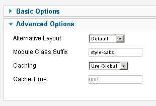
über die Variable $template wird nun das von uns erstellte cabs.php Template dem Modul Style cabs zugeordnet.
Wenn Sie mehr über Modul Styles und ihre Templates erfahren möchten, lesen sie das Create a new module style Tutorial.
So, um den Style nun auch aktiv einzusetzen, sagen wir unserem Most Read Modul per Klassen Suffix, dass es diesen nutzen soll. Sie sollten nun eigentlich wissen, was nötig ist. Denken Sie kurz (oder lange) nach und lesen Sie dann weiter.
OK, wir geben als Modulklassen-Suffix also style-cabs ein.
Damit haben wir unserem Template gesagt, dass es dieses Modul mit dem neuen Modul Style cabs rendern soll. Als Ausgabe erscheint dann auch:
<div id="contentabs">
<div class="module cabs deepest">
<h3 class="module-title closed">Articles Most Read</h3>
<div id="cabs-wrap">
<ul class="line line-icon">
<li>...</li>
<li>...</li>
...
</ul>
</div>
</div>
</div>
Genau so soll es sein! Beim alternativen Weg das Modul mit dem cabs-Style zu rendern, wäre in der modules.php so um die Zeile 30 herum Folgendes einzufügen:
if ($module->position == 'contentabs') $style = 'cabs';
Egal wie Sie es machen, unser Toggler kann jetzt auf das DIV Element cabs-wrap zugreifen. Welcher Toggler, werden Sie sagen? Nun, in die bereits in unser Style kopierte template.js schreiben wir folgende Zeilen:
window.addEvent('_domready', function(){
var cabs_slide = new Fx.Slide('cabs-wrap');
cabs_slide.hide();
$$('#contentabs .module-title').addEvent('click', function(event){
event.stop();
this.toggleClass("closed");
cabs_slide.toggle();
});
});
Obwohl die Datei jQuery Anweisungen enthält, habe ich den Toggler mit ein paar Mootools Zeilen realisiert. Wenn wir nun die Seite neu laden, sollte der Toggler funktionieren, und siehe da - nichts! Wo liegt der Fehler?
Das finden wir schnell heraus, wenn wir in die JS-Console des Browsers sehen. Dort werden wir durch eine Fehlermeldung darauf aufmerksam gemacht, dass die vom Toggler genutzte Mootools Klasse Fx unbekannt ist - logisch! Joomla lädt in der Regel nur die Core-Dateien von Mootools. Effekte etc. sind Bestandteil des Mootools Paketes more, welches aus Performancegründen nur bei Bedarf geladen wir. Wir haben Bedarf, also her damit!
Für unsere Template index-Datei haben wir ja bereits ein Override erstellt. Wir öffnen also die Datei template.php und fügen ganz zu Beginn folgende Zeile ein:
JHtml::_('behavior.framework', true);
Das true sorgt dafür, dass auch Mootools-More geladen wird. Der JS-Fehler ist verschwunden und das Modul lässt sich nun über den Titel ein- und ausklappen. Die Funktionalität ist wohlgemerkt trivial, wichtig ist nur, dass Sie das Potential an Aus- bzw. Umbaufähigkeiten eines Warp Templates verstehen.
Mit ein wenig CSS in der modules.css wird unser Toogler auch ansehnlich:
#contentabs {
position: absolute;
right: 0;
box-shadow: 0 0 -3px 8px rgba(0, 0, 0, 0.15);
background-color: #FCFBF2;
}
#cabs-wrap {padding-top:10px; }
.cabs {margin:8px;}
.cabs .module-title {padding-right: 40px;cursor:pointer;margin: 0;}
.cabs .module-title {background: url(../images/bullet_toggle_minus.png) right center no-repeat}
.cabs .closed {background: url(../images/bullet_toggle_plus.png) right center no-repeat;}
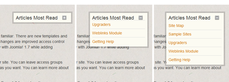
Die Bilder legen Sie in den Ordner /styles/nice/images.
Das Dumme ist nur, dass das Most Read Modul überall auftaucht. Auch dort, wo es eigentlich nichts zu suchen hat, wie z.B. bei einer Login-Maske. Klar, wir könnten das Modul im Joomla Backend nur bestimmten Menüpunkten zuordnen usw., aber das würde uns nicht glücklich machen. Wir wollen, dass dieses Modul nur in der Detailansicht eines Artikels erscheint. Das kann man im Joomla Backend nicht konfigurieren, also lösen wir es ganz auf die gute alte Art.
Im template.php fügen wir oben folgende zwei Zeilen ein:
$coption = JRequest::getCmd('option', null);
$cview = JRequest::getCmd('view', null);
In der gleichen Datei haben wir eine neue Modulposition für unser absolut positioniertes Modul eingefügt. Das ändern wir nun wie folgt ab:
<?php if ($cview == 'article' && $coption == 'com_content' && $this['modules']->count('contentabs')) : ?>
<div id="contentabs">
<?php echo $this['modules']->render('contentabs'); ?>
</div>
<?php endif; ?>
Damit wird unser Modul nur in Detailansichten von Joomla Artikeln dargestellt.
Custom Design (Teil 1)
Damit das Template etwas Charakter bekommt, platzieren wir ein Logo oben links. Dazu können Sie ein Custom HTML Modul in die position logo legen. Ob Sie das Logo als Bild in das Modul legen oder als CSS-Hintergrund definieren, liegt bei Ihnen. Ich habe es als CSS Hintergrund in die layout.css eingefügt.
#logo {
background: url(../images/logo.png) 0 0 no-repeat;
width: 195px;
height: 44px;
margin-left: 10px;
}
Des Weiteren wurde in der Template Konfiguration -> Profiles der Date Parameter auf No gestellt. Das Top-Menü in der Modulposition toolbar-r brauchen wir für dieses Template nicht, also deaktivieren wir es und wir tauschen die Hintergrundfarbe durch etwas Sandigeres aus:
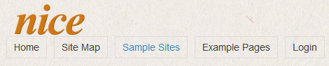
Die Navigation würde ich gerne in der gleichen Höhe wie das Logo platzieren. Um zu sehen, wie das gehen kann, schauen wir uns die HTML-Struktur an. Sie sollten immer die template.php vor Augen haben. Dort wird definiert, wo welches Modul liegt und welche wichtigen HTML-Strukturen das Template zusammenhalten.
Sie sehen in der template.php, dass das Logo von einem DIV mit id headerbar umgeben wird. Zusätzlich wird noch ein Modul mit der Position headerbar geladen. Das Modul in der Position headerbar können Sie entweder ignorieren oder aus der template.php entfernen, es kommt ganz darauf an, ob Sie hier einmal ein Modul laden wollen. Ich entferne es aus dem Template:
<?php if($this['modules']->count('headerbar')) : ?>
<div class="left"><?php echo $this['modules']->render('headerbar'); ?></div>
<?php endif; ?>
Nachdem wir diesen Abschnitt gelöscht haben, legen wir die Navigation mit folgendem CSS in der layout.css neben das Logo:
#headerbar { margin: 10px 0; float:left; }
#menubar { margin: 26px 0 0 0px; }
#menu { float: right; }
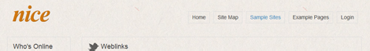
Das Ganze sieht jetzt wie zur Rechten aus.
Das Suchmodul nervt etwas, weswegen wir es erst einmal deaktivieren. Nun benötige ich ein weiteres DIV-Element, um das Menü und das Logo vom Rest der Seite abzusetzen. Das erreiche ich, indem ich folgendes DIV in der template.php direkt unter das menubar DIV lege:
<div class="menu-shadow"></div>
Jetzt noch folgenden CSS-Code in die layout.css legen und wir haben einen netten Verlauf:
.menu-shadow {
opacity: 0.6;
height: 12px;
border-top: 1px solid rgba(233, 82, 26, .5);
background: -webkit-gradient(linear, left top, left bottom, from(rgba(0, 0, 0, .2)), to(transparent));
-webkit-mask-box-image: -webkit-gradient(linear, left top, right top, color-stop(0.0, rgba(0,0,0,.2)), color-stop(0.5,rgba(0,0,0,.8)), color-stop(1.0, rgba(0,0,0,.2)));
}
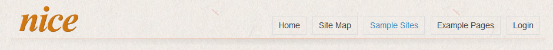
Hier liegen ein paar CSS3 Anweisungen, welche nur im Chrome Browser funktionieren, aber Sie können das auch gerne mit transparenten PNGs bzw. Browser-Alternativen CSS Anweisungen machen.
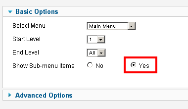
Das Menü selbst wird in der Datei menus.css gestyled. Diese haben wir bis jetzt noch nicht angefasst. Erstellen wir also ein Override, indem wir die Datei /css/menus.css in unseren CSS-Override Ordner /styles/nice/css kopieren (nicht vergessen, die import Zeile anzupassen!).
Hier können wir uns nun austoben um das Menü nach unseren Wünschen zu gestalten. Bevor wir das machen, ein paar Informationen zum Hauptmenü.
Das Menü, welches bei einem Warp Template in der Position menu liegt, kann von vielen Fähigkeiten des Warp Frameworks profitieren. Sie kennen vielleicht Menüs, welche Sublines, Icons, mehrere Hierarchien, beliebige Breiten und Spaltenanzahlen usw. enthalten. All das können Sie mit dem Menüsystem des Warp Frameworks umsetzen. Ein paar Informationen dazu finden Sie hier:
Setup the Joomla menu.
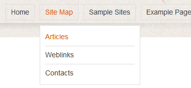
Ich habe auch gleich ein paar Menüpunkte deaktiviert, um etwas Luft zu bekommen. Nun sieht das Menü wie folgt aus:
Jetzt aber hinein in die menus.css und das Hauptmenü angepasst. Die menus.css kann etwas schwierig sein, da dort sehr viele CSS-Anweisungen vererbt werden. Wenn Sie acht auf die verschiedenen level-Klassen geben, sollten Sie sich schnell zurecht finden.
Ich habe folgende Anpassungen durchgeführt:
.menu-dropdown li.level1 {
margin: 0;
padding-bottom: 4px;
}
.menu-dropdown a.level1,
.menu-dropdown span.level1 {
border: none;
color: #555;
font-weight: bold;
}
.menu-dropdown a.level1 > span,
.menu-dropdown span.level1 > span {
height: 30px;
line-height: 30px;
padding: 0 20px;
text-shadow: 1px 1px 0 white;
}
/* Set Active */
.menu-dropdown li.active .level1 { color: #D07711; }
.menu-dropdown li.active { border-bottom: 5px solid #D07711;}
/* Set Hover */
.menu-dropdown li.level1:hover ,
.menu-dropdown li.remain {border-bottom: 5px solid #D07711; }
.menu-dropdown li.level1:hover .level1,
.menu-dropdown li.remain .level1 { color: #D07711; }
/* Drop-Down */
.menu-dropdown .dropdown {
top: 39px;
margin-left: 0px;
border-top: none;
}
.menu-dropdown .dropdown-bg > div {
padding: 5px;
border-top: none;
border: 1px solid #ddd;
border: 1px solid rgb(208, 119, 17);
background: rgba(255, 255, 255, 0.85);
}
.menu-dropdown li.level2 {
margin: 0 5px;
border-top: 1px solid #ddd;
}
.menu-dropdown a.level2 > span, .menu-dropdown span.level2 > span {
padding: 3px 0;
}
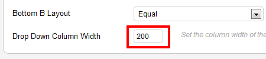
Damit unser Dropdown nicht zu breit ist, stellen wir die Breite auf 200 Pixel ein. Dies tun wir ganz unten bei den Template Parametern im aktuellen Profil:
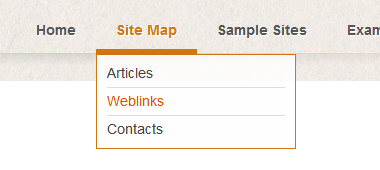
Haben Sie das getan, sieht Ihr Dropdown nun in etwa so aus:
Bevor wir uns an den Rest der Seite machen, will ich erst einmal sämtliche momentan unnötigen Module deaktivieren. Dies wären alle Module über und unter dem Content. Das Submenü Modul wechseln wir von Position sidebar-b auf sidebar-a. Eigentlich sollte das Submenü Modul dadurch von der rechten Seite (sidebar-b) auf die linke Seite (sidebar-a) wechseln. Möglicherweise ist das bei Ihnen nicht geschehen, warum?
Sehen wir uns nochmals die Modulpositionen an:
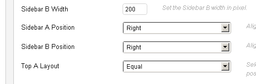
Sie sehen, dass die roten Modulpositionen sidebar-a und sidebar-b zweimal vorkommen. Wo also legen wir fest, ob die Modulposition sidebar-a links oder rechts vom Content erscheinen soll? Das tut man natürlich in der Template Konfiguration. Hier gibt es folgende Einstellungen:
Sidebar A Position wechseln wir auf Left. So, nun erscheinen alle Module, welche in dieser Position geladen werden, links vom Content. Sie können sich sicher vorstellen, wie flexibel allein durch diese Einstellung ein möglicher Layoutaufbau werden kann. Das beste ist aber, dass diese Funktionalität (wie auch vieles andere) komplett durch einen eigenen Style umgebaut werden kann.
Custom Design (Teil 2)
Durch Erweiterung der CSS-Anweisungen in den CSS-Dateien /styles/nice/css/ habe ich das Design nun wie folgt angepasst:
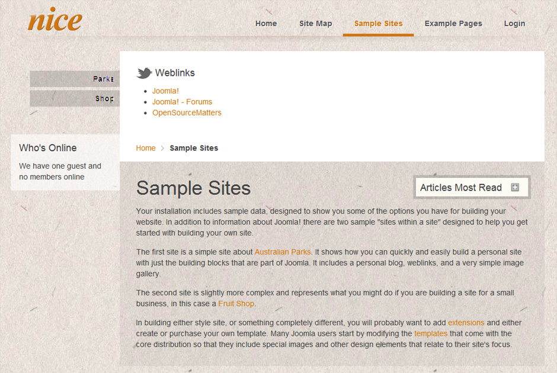
Eigene Template Parameter
Um zu demonstrieren wie man eigene Template Parameter integrieren kann, wollen wir die Option schaffen, in unserem Template zwischen runden und eckigen Ecken zu wechseln.
Einen solchen Parameter können wir in der Datei config.xml im Hauptverzeichnis unseres Templates (nicht Styles) einbauen. Die config.xml läßt sich übrigens nicht per Override im Style-Verzeichnis individualisieren. Es gibt nur eine config.xml und diese gilt für alle Styles.
Wir bauen also an einer geeigneten Stelle folgenden XML-Code ein:
<field name="rounded" type="radio" default="0" label="Rounded Corners" description="Use rounded corners">
<option value="0">No</option>
<option value="1">Yes</option>
</field>
Was ist eine geeignete Stelle? Wenn Sie dieses neue Feld innerhalb des Profiles-Tags einbauen, dann können sie den Parameter runde Ecken profilbasiert ein- und ausschalten. Am besten also direkt wie folgt:
<fields name="Profiles">
<field name="Style" type="separator" />
<field name="rounded" type="radio" default="0" label="Rounded Corners" description="Use rounded corners">
<option value="0">No</option>
<option value="1">Yes</option>
</field>
...
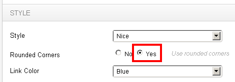
So, nun können Sie den Parameter, d.h. runde Ecken, schon einmal aktivieren:
Um die nötige Funktionalität einzubringen müssen wir ein Override für eine Datei erzeugen, welche wir bis jetzt noch nicht benutzt haben. Kopieren Sie die Datei \yoo_master\layouts\template.config.php nach \yoo_master\styles\nice\layouts\. Sie haben also ein Override für die Datei template.config.php erstellt.
Diese Datei ist ein Wunderwerk an Möglichkeiten, welche unmöglich alle in diesem Tutorial besprochen werden können. Wenn Sie jedoch etwas PHP verstehen und die folgenden Anweisungen nachvollziehen können, sollten Sie keine Schwierigkeiten haben das Potential dieser Datei zu erkennen.
Um Zeile 85 herum fügen wir folgenden Code ein:
if ($this['config']->get('rounded') == 1) $this['asset']->addFile('css', 'css:rounded.css');
Danach platzieren wir eine leere CSS-Datei namens rounded.css in unseren Style Ordner \yoo_master\styles\nice\css\. Was nun passiert, ist Folgendes:
- Das Warp Framework entdeckt unsere template.config.php auf der 3. Ebene und nutzt diese.
- Die von uns eingefügte Zeile veranlasst das Framework auf allen drei Ebenen nach der rounded.css zu suchen.
- Die rounded.css wird auf der 3. Ebene gefunden und geladen.
Sie könnten die rounded.css also auch einmalig auf der zweiten Ebene platzieren (/css) und für alle Styles verfügbar machen ohne Sie in allen Styles Ordnern ablegen zu müssen.
In die rounded.css platzieren wir etwas CSS um hier und da runde Ecken zu erzeugen:
.menu-sidebar a, .menu-sidebar li > span,
#sidebar-a .grid-box {
border-bottom-left-radius: 6px;
border-top-left-radius: 6px;
}
#maininner {
border-radius: 6px;
}
#innertop {
border-top-left-radius: 6px;
border-top-right-radius: 6px;
}
#breadcrumbs {
border-bottom-left-radius: 6px;
border-bottom-right-radius: 6px;
}
.menu-dropdown .dropdown-bg > div {
border-bottom-left-radius: 6px;
border-bottom-right-radius: 6px;
border-top-right-radius: 6px;
}
Da wir die rounded.css innerhalb der template.config.php erst relativ weit unten laden, werden alle sich darüber befindenden CSS-Anweisungen überlagert. Nur die Font-CSS-Dateien folgen danach. Sie können die Reihenfolge der zu ladenden CSS-Dateien so selbst bestimmen.

Binden Sie CSS-Dateien auf diese Weise, also durch das Warp Framework, ein, so werden diese in mögliche CSS und JS Kompressions- und Minimierungsvorgänge eingeschlossen, welche ein Warp Template bietet.
Zurück zu unserem Template. Wenn nun der Template Parameter “Rounded Corners” aktiv ist, sieht unser Template wie folgt aus:
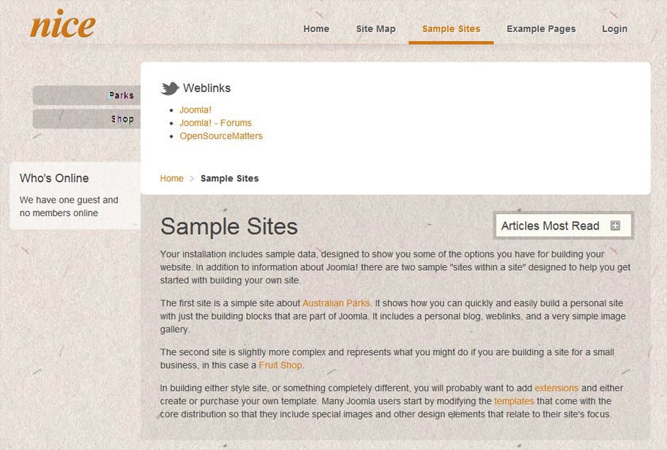
Schalten wir den Parameter aus, wird die rounded.css nicht geladen und unser Template sieht aus wie zuvor.
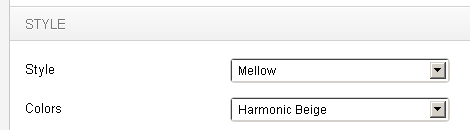
Auf gleiche Art können Sie bei Templates Farbvariationen oder grafische Hintergründe realisieren. Natürlich können Sie verschiedene Styles erzeugen, welche die nötigen Farben innehaben. Bei den drei Styles des PRIME-Templates unter http://demo.prime-real.de/ haben wir für die sechs Farbpaletten eigene CSS-Dateien erstellt, welche im Backend jedem der drei Styles zugeordnet werden können.
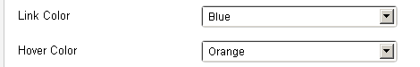
Hätten wir die Farben direkt in die Styles integriert, könnte der Kunde nur zwischen drei Styles wählen. So erhalten unsere Kunden 3*6 Kombinationsmöglichkeiten, die Schriftartenvariationen nicht mitgerechnet. Das Master Template bietet zwei Parameter in Sachen Farbe: Link Color und Hover Color
Damit können Sie eine Farbe für Links und deren Hover-States Ihrer gesamten Seite wählen. Die dazugehörigen CSS-Dateien befinden sich in \css\color1\ und \css\color2\. Ich konnte damit nicht viel anfangen. Wozu Farben nur für Links definieren, wenn man früher oder später sowieso Farbpaletten für die gesamte Webseite festlegen muss. Lassen Sie sich von diesen zwei Einstellungen also nicht verwirren. Vielleicht werden Sie sie nutzen und die zur Verfügung stehenden Farben erweitern oder Sie lassen es einfach und löschen die beiden Parameter aus der config.xml des Templates.
Schriftarten

Schriftarten werden bei Warp-Templates ebenfalls nur in einzelnen CSS-Dateien definiert und dann bei Bedarf geladen. Im Ordner /css finden Sie drei font Ordner. Jeder davon bezieht sich auf eine vom Master Template vorgegebene Gestaltungsebene.Ich habe bei unserem Template mal folgende Typo-Konfiguration ausgewählt:
- Body Font (font1) - Die Schrift für den Seiteninhalt
- Header Font (font2) - Die Schrift für Modultitel oder überschriften (H1 usw.)
- Menu Font (font3) - Die Schrift für das Hauptmenü
Mit den ausgewählten Parametern erhalten wir folgenden Look:
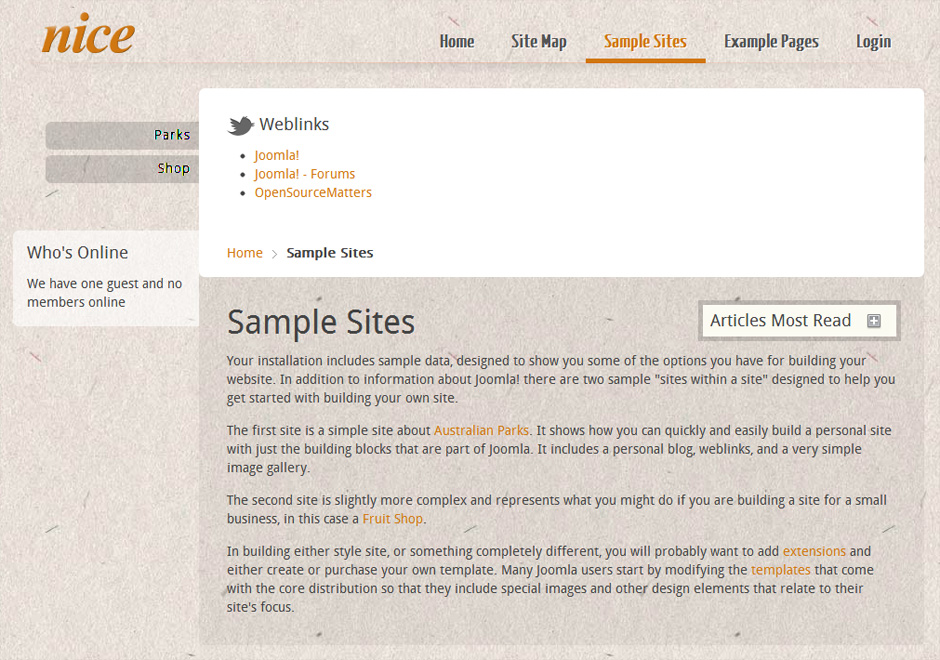
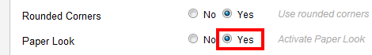
Denken Sie daran: Diese drei Schrifteinteilungen sind nur eine Vorgabe des Master Themes. Sie können diese Parameter komplett umbauen, weglassen, zusammenfassen, was auch immer. Bei einem Warp Template ist so gut wie nichts in Stein gemeißelt. Um das zu demonstrieren habe ich einen Parameter namens Paper eingeführt.
Folgende Datei namens paper.css wurde in den CSS-Style Ordner gelegt:
#breadcrumbs {
background: transparent url(../images/bc-bgr.png) 0 0px repeat-x;
margin-top: -21px;
padding-top: 100px;
box-shadow: 0 6px 7px -3px rgba(0, 0, 0, .4);
}
#innertop {
background: #fff url(../images/top-bgr.jpg) 0 0 no-repeat;
}
#maininner {
background: #fff url(../images/paper-bg.jpg) 40px 0 repeat;
}
#sidebar-a .paper {
margin:0;
padding: 12px 15px 30px 15px;
background: #fff url(../images/karton.jpg) 0 -70px no-repeat;
box-shadow: 0 6px 7px -3px rgba(0, 0, 0, .4);
}
#sidebar-a .paper .module-title{
color:#fff;
margin-bottom:40px;
}
.menu-sidebar a, .menu-sidebar li > span {
background: #fff url(../images/navi-bgr.jpg) 0 0 repeat;
box-shadow: 0 4px 4px -2px rgba(0, 0, 0, .3);
color:#82531D;
}
Aktiviert man den Paper-Parameter, passiert folgendes:
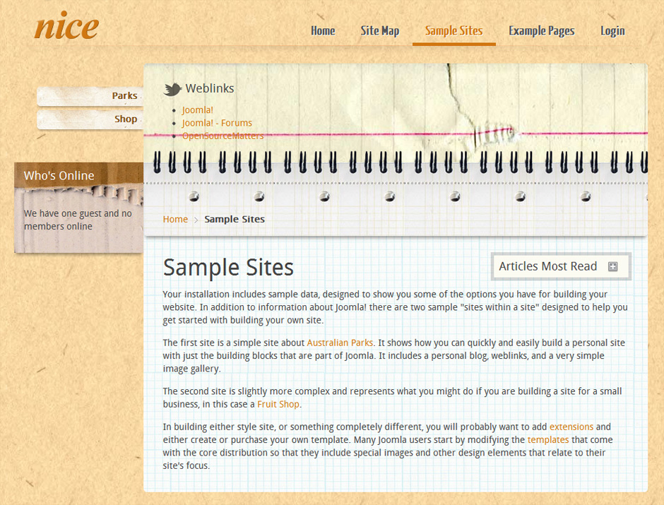
Diese (etwas experimentelle) Anpassung hat gerade einmal 60 Minuten gedauert. Das meiste davon ging für das Freistellen der Bitmaps drauf. Dafür habe ich nur die obige paper.css hinzugefügt, in der alle Abwandlungen stattfinden. Mit alle meine ich wirklich alle, egal ob Layout, Modul, Farben usw. Sie sehen also, dass es manchmal sinnvoll ist, flexibel auf verschiedene Anforderungen zu reagieren.
Nächste Schritte
Warum nicht das Template fertigstellen? Wechseln Sie doch die Module von der linken auf die rechte Seite (Modulposition sidebar-b). Sie werden sehen, dass das angefangene Template Module in dieser Position noch nicht richtig schön darstellt, besonders nicht im Paper-Look. Aktivieren Sie alle zu Beginn des Tutorials genannten Module und schauen Sie, was passiert. Dank des Warp Frameworks wird das Template immer korrekt strukturiert bleiben. Sie müssen nur ein wenig CSS hier und da einfügen.
Wenn Sie etwas fortgeschrittene Themes angehen möchten, so empfehle ich, sich mit der template.config.php zu beschäftigen. Hier können Sie unter anderem die Berechnungen der Breiten bestimmter Elemente beeinflussen, falls Ihr Template das benötigt. Grundsätzlich können Sie hier natürlich alles mögliche einprogrammieren. Auch die module.php ist eine Datei, in der man das Verhalten und Aussehen der Module auf unterschiedlichste Weise beeinflussen kann.
Nachwort
Wie üblich bei so vielschichtigen Lösungen wie dem Warp Framework, kann ein Tutorial nur einen ersten Einblick in die Materie geben. Einige wichtige Themen habe ich nicht angesprochen. Dazu zählt zum Beispiel das integrierte Mega-Menü (Setup the Joomla Menu Tutorial), welches hauptsächlich eine Konfigurationsfrage ist. Ebenso die Möglichkeit, eigene Modul-Layouts erzeugen zu können (Create a new module layout Tutorial) oder wie Content Overrides bei einem Warp Template angelegt werden (Override System Files Tutorial). Ebenso die Möglichkeiten, innerhalb der responsive.css Layout-Abwandlungen für verschiedene Endgeräte zu definieren.
All das sind jedoch Themen, welche man sich an dieser Stelle ohne große Schwierigkeiten selbst erarbeiten kann. Einer der wichtigsten Aspekte bei der Erstellung eines Warp Templates ist die Organisation.
Sie werden sich häufig bei einer Frage erwischen, die ungefähr so lautet: "Soll ich die Schriftgröße des Modultitels nun in der arial.css, der layout.css oder der modules.css definieren?" Ebenso werden Sie sich dabei ertappen, wie sie in der layout.css anfangen, CSS-Anweisungen für Module unterzubringen. Halten Sie Ordnung! Mit der Zeit werden Sie den Dreh heraus haben und instinktiv in den nun sehr handlichen CSS-Dateien die passenden CSS-Anweisungen unterbringen.
Sollten Sie das Tutorial nachvollzogen haben, bin ich mir sicher, dass Sie das Potential für Ihre tägliche Arbeit entdecken konnten und bereits beginnen, eines Ihrer zuletzt entwickelten Joomla Templates auf Warp umzustellen oder ein neues zu entwickeln. Da Sie sich nun voll und ganz dem Gestaltungsprozess hingeben können, wünsche ich Ihnen viel Spaß dabei!